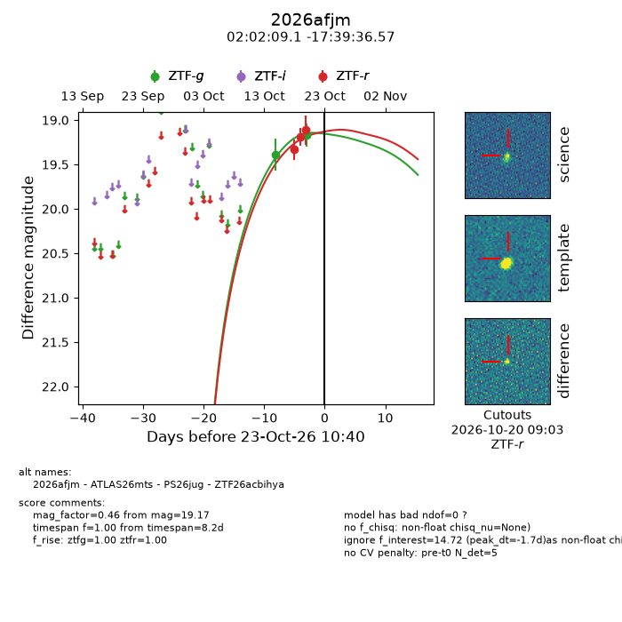
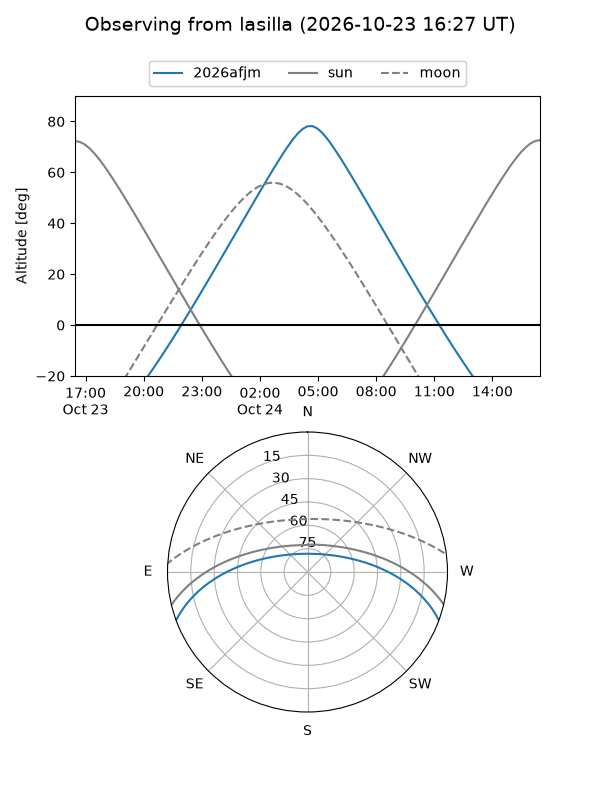
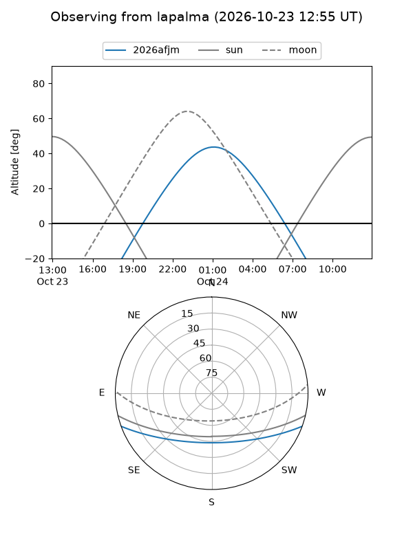
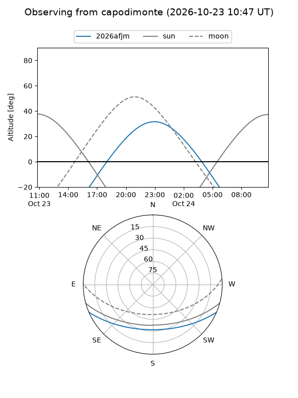
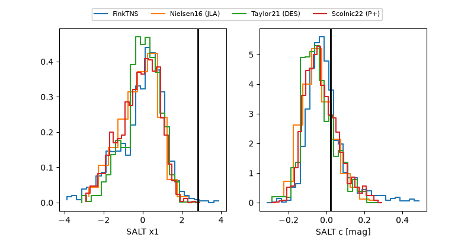

2026afjm
Target 2026afjm at 2026-10-23 10:42
Aliases and brokers:
FINK-ZTF: ztf.fink-portal.org/ZTF26acbihya
Lasair-ZTF: lasair-ztf.lsst.ac.uk/objects/ZTF26acbihya
ALeRCE-ZTF: alerce.online/object/ZTF26acbihya
YSE-PZ: ziggy.ucolick.org/yse/transient_detail/2026afjm
TNS name: wis-tns.org/object/2026afjm
Direct TNS query: direct search
alt names
ZTF26acbihya (ztf,fink_ztf)
2026afjm (tns,yse)
ATLAS26mts (atlas)
PS26jug (panstarrs)
Coordinates:
equatorial (ra, dec) = 30.5381,-17.66016
equatorial (HMS+DMS) = 02:02:09.13,-17:39:36.57
galactic (l, b) = (186.4784,-71.14305)
Flags:
peak dt: -1.7
Photometry:
last ztfg=19.17, ztfr=19.11
2 ztfg, 3 ztfr detections
Lightcurve

Visibility



Additional plots
